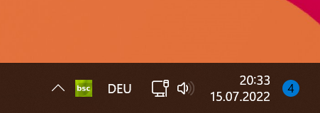

Erste Einrichtung
Nach der Installation
Backup Service Home 3 arbeitet grundsätzlich im Hintergrund, sodass Sie nichts von der Datensicherung merken. Damit Sie allerdings auf Backup Service Home 3 zugreifen können, sowie feststellen können, ob Backup Service Home 3 läuft, wurde ein Symbol in der Taskleiste hinzugefügt. Sobald Sie Backup Service Home 3 installiert haben, erscheint unten rechts in der Taskleiste (neben der Uhrzeit) ein neues Symbol (vgl. Abbildung) auf. Dieses Symbol ist der zentrale Zugriff auf Backup Service Home 3.

Backup Service Home 3 startet automatisch 2 Prozesse, die beide immer laufen müssen, damit Backup Service Home 3 die Datensicherungen erfolgreich durchführen kann. Es sind folgende Dateien:
BSH.MainApp.exe
BSHService.exe
Über deren Funktion wird in diesem Artikel nicht eingegangen. Es dient lediglich zu Ihrer Information.
Die erste Einrichtung
Nach der Installation ist Backup Service Home 3 zunächst in einem deaktivierten Modus. Sie müssen zunächst einmal Backup Service Home 3 einrichten, damit es Datensicherungen durchführen kann. Im nachfolgenden werden Sie Schritt für Schritt die erste Einrichtung durchführen:
-
Doppelklicken Sie auf das Backup Service Home 3-Symbol in der Taskleiste neben der Uhrzeit. Der Backup Service Home 3 Einrichtungsassistent wird Ihnen angezeigt. Sie haben nun 2 Möglichkeiten, wie Sie fortfahren können. Da dieser Artikel die "Erste Einrichtung" erläutert, klicken Sie nun auf Konfigurieren.
-
Im nächsten Schritt müssen Sie die Verzeichnisse der Liste hinzufügen, die Sie sichern möchten. Sie können beliebig viele Verzeichnisse der Liste mit der Schaltfläche Hinzufügen hinzufügen. Verzeichnisse die Sie der Liste hinzufügen, werden mit samt ihrer Unterverzeichnisse gesichert. Sie können später Ausnahmen festlegen. Mit der Schaltfläche Löschen können Sie bereits der Liste hinzugefügten Verzeichnisse wieder entfernen.
-
Sobald Sie alle gewünschten Verzeichnisse hinzugefügt haben, klicken Sie auf Weiter.
-
Nun legen Sie das Sicherungsmedium fest, auf dem die Datensicherung gespeichert werden soll. Es stehen Ihnen 2 Sicherungsmedientypen zur Verfügung. Im nachfolgenden wird die Sicherung auf einer externen Festplatte beschrieben.
Schließen Sie nun das Sicherungsmedium an Ihren Computer an und klicken Sie auf Aktualisieren, wenn das Sicherungsmedium noch nicht erkannt wurde. Wählen Sie den Eintrag aus der Liste aus und klicken Sie auf Weiter.
-
Im Prinzip sind Sie nun bereits fertig. Sie können jedoch, wenn Sie möchten noch weitere Einstellungen vornehmen. Weitere Informationen über die detaillierten Eigenschaften finden Sie im Thema ##. Wenn Sie diese Option wählen, wird die Datensicherung eingerichtet und Sie werden direkt zu den Einstellungen weitergeleitet.
Da in diesem Artikel die empfohlenen Einstellungen für die meisten Benutzer beschrieben werden, belassen Sie die Vorauswahl auf Automatische Einrichtung und klicken Sie auf Weiter.
-
Nun richtet Backup Service Home 3 Ihre Datensicherung ein und führt bereits die erste Datensicherung durch. Dieser Vorgang kann unter Umständen und Umfang Ihrer Daten einige Minuten oder Stunden in Anspruch nehmen.
Während der ersten Einrichtung
Während die Datensicherung durchgeführt wird, wird der Status der Datensicherung im Fenster angezeigt. Sie können das Fenster schließen, ohne die Datensicherung abzubrechen. Wann immer eine Sicherung durchgeführt wird, färbt sich das Backup Service Home 3-Symbol in der Taskleiste blau. Mittels Doppelklick erscheint das Statusfenster wieder und zeigt Ihnen den aktuellen Zustand an.
Note
Bei der ersten Datensicherung läuft Backup Service Home 3 mit normaler Priorität. Das heißt, dass Backup Service Home 3 mit hoher Leistung die Sicherung durchführt. Im vollautomatischen Modus, den Sie eingestellt haben, sichert Backup Service Home 3 ihre Daten mit niedriger Priorität, sodass Sie ungestört weiterarbeiten können.
Wie geht es weiter?
Lesen Sie Funktionsweise, um zu erfahren, wie Backup Service Home arbeitet.